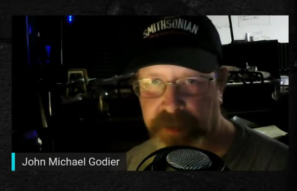

Typical case of misidentifying a small orb as an aircraft carrier-sized UFO

Introduction
- There is a famous UFO photo (below) that was officially recognized by the Brazilian government.

Traditionally, the size of this UFO has been estimated to be over 15 meters in diameter. The Brazilian government estimated this size based on eyewitness testimony that the UFO went around the backside of a distant mountain and then emerged from the backside of that mountain.
I have determined that this UFO is a small spinning orb located close to where the photo was taken. Why did the witnesses in this photo misidentify a small orb at close range as a giant-sized UFO?
The key to solving this mystery is the specific case discussed below.
Preface
- No audio transcription (auto-generated) is assigned to this video.The part about the subject
- 51:40 Jimmy Church own experience. Broad daylight. Sighted for 10-15 sec. at the base of Mt. Adams (*: James Gilliland's ECETI site) through a telescope. Also visible to naked eye. It was about the size of a crude oil tanker. - The estimated UFO looked like a 400ft tall beer can, emerging from the backside of the summit 14 miles away. It looked like a black cylinder spinning vertically (as shown in the photo below, a paper cup of coffee is used to illustrate the scene as if it were the UFO).Video (3:04:22)
Ep. 1621 John Michael Godier The Event HorizonMy view
- Guest John Michael Godier (below: science fiction author and science commentator) attempts a scientific explanation of Jimmy Church's testimony (omitted).  - I interpret this UFO as follows. - There are many fault zones (*1) near Mt. Adams. The orb appears luminous at night, but during the day it appears silver, gray, or black, depending on the energy of the orb. - Jimmy Church estimated the UFO to be 400 ft. high because it emerged from behind the summit of Mt. Adams. However, this UFO did not emerge from behind the summit, but an ordinary orb should have appeared in the air not far from Jimmy Church's point. - Because orb is a thin plasma, not a solid, it is visible as black or gray against a sky or cloud background, but almost invisible against a mountain background in broad daylight. In other words, an orb at most a few hundred meters away appeared against a mountain background and rose slowly into the sky. - The orb's background was not seen by Jimmy Church et al. until it reached the sky above the summit, which caused Jimmy Church et al. to believe that a giant UFO had appeared from behind the summit. This gave Jimmy Church et al. the illusion that a giant UFO had appeared from behind the summit of the mountain. - The orb was rotating at a low speed, so the irregularity of the orb was probably seen as a silver circle on a black fuselage.(*1)
The identity of the UFOs frequently sighted on the ECETI Ranch would be a ball lightning generated by crustal pressure. (2020-11-24)A postscript
. - I noticed that a previous article below also covered this issue. Jimmy Church : Many people, including myself, saw a huge UFO appear from behind a mountain top in broad daylight. (2019-11-29)
First published article (Japanese)
Jimmy Church の体験 : Mt. Adams の山頂の裏から巨大な円筒形 UFO が出現するのを大勢で目撃 (2022-05-17)
2022-09-30 Postscript.
- I checked the video today and found that an audio transcription (auto-generated) had been added, so I am attaching the audio transcription (auto-generated) of the relevant part below. The audio recorded at the site at the time is also played back in this video. Jimmy Church states that no video was taken of the UFO in question, only a photo, but a quick look at the photo does not show it in the video above.
this is something i've mentioned 51:28 many times on this show so i apologize to those that have heard 51:34 it before but those that haven't uh which includes you john i i don't know maybe you've heard the story but um 51:41 i'm up in in washington state and i've got uh i'm hosting uh my conference i've 51:47 got about three 300 people there but outside i'm taking a break and i'm sitting at a picnic 51:54 table i've got about 30 friends around me um we're goofing around i'm sitting there 51:59 with binoculars on a tripod at this picnic table and i'm looking at birds 52:05 i'm literally looking at mount adams which is 14 miles away we know that 52:11 and i'm looking at the birds i'm looking at the peak of mount adams when at that moment 52:17 14 miles away from behind the peak of the mountain pops up this guesstimating 52:25 400 foot tall beer can and it's spinning like this and there 52:32 was a a a silver circle on one side you could 52:37 see it rotating it's black and it's got like a thick chrome top and a thick chrome bottom 52:43 and it's going across the canals what right and i freak out 52:49 and i look again in the binoculars i'm like that is the biggest thing i've ever seen in my life 52:55 and it's up you know and it's going it's in the middle of the day it's three o'clock in the afternoon and the sun is 53:00 shining on it it's razor sharp in focus and i lose my mind 53:06 and uh i'll send you the video so i jump up and i'm like man 53:12 video video i'm losing it it's like five seconds later the whole event lasted 53:17 about 10 or 15 seconds i come back to the binocular everybody sees it and i look at it 53:23 with my naked eye and i could see the you know i could see it i could see it spinning and i could see the sunlight 53:28 and every time that circle came around it right it would light up and uh and it's gone i go back to the binoculars 53:35 and i take like one more i'm trying to absorb it right into my brain what i'm 53:41 seeing and i look at it from top to bottom and i come back out to look again and somebody says it's gone 53:48 it's like what i thought we were gonna see it for like an hour moving across the sky i said what do you mean it's 53:55 gone i go back to my it phased out man it phased out i go back to the it's gone 54:02 it's gone now i can't say that was alien 54:09 but i can tell you this that was the craziest thing and that was in the middle of the day this was in 54:15 that night this wasn't lights in the sky this was 400 feet tall 54:21 14 miles away from behind the mountain and i i am left with nothing that i want to 54:28 know what that was that's it somebody knows something that is uh uh 54:37 um when when you share that with 30 other people and we all see this together they 54:43 need those answers i need those answers but that wasn't that wasn't our military 54:50 --- JMG: no well we we were handicapped by the problem that and curse melon brings us 54:55 up a lot in his articles that were handicapped by the government's unwillingness to 55:01 release data because whatever you saw there's probably a radar record if it was uh indeed solid 55:07 um but there's probably a radar record of that you know something that big you know that high if it's up as high as 55:13 mount adams it's it's pretty high um now i can tell you now and this don't 55:20 shoot the skeptic but atmospheric things the atmosphere can do weird things and create photo morganas and things like 55:26 that but maybe that's a little high for that if it was you know at that altitude above the atmosphere 55:32 because you know usually this stuff is is a phenomenon of being near the horizon 55:38 um so you know it wasn't a --- JC: this wasn't a floating exxon oil tanker 55:44 --- JMG: yeah well the other question is that if it was something that you didn't immediately recognize 55:50 what it was because if it was an oil tanker you know out in the ocean or something you'd know that right but this 55:55 you don't know so --- JC: i can't describe it any more than what i just said to you it was uh 14 miles away 56:03 it popped out from behind the mountain it didn't come in from the other side of the peak of the mountain i didn't see 56:09 any of that uh it and i was looking for probably 10 or 15 minutes there and i would have 56:14 seen it come in from somewhere else it just came in but this 56:21 no wings you know nothing you know nothing that would it it was crazy so now when 56:28 when i see something like that um and and i hear others say 56:34 it's your imagination or it's there's you it wasn't there or was it no no no 56:40 no no you're not going to change anything about what happened but you can't tell me that there's nothing going 56:46 on --- JMG: did everyone did everyone present describe exactly the same object 56:46 on did everyone did everyone present describe exactly the same object --- JC: okay uh 56:52 you know what check this out check this out um i will play you 56:59 this is the video um i'm just gonna play the audio and uh 57:05 let me let me pull it up here just just stay with me where is it 57:18 yeah you gotta love live radio right you gotta love live radio 57:25 and yeah and they got to avoid the dead era you know yeah i wasn't expecting uh to play this 57:33 um --- JMG: well the reason i asked was that sometimes there's some theories floating 57:40 around about people that that --- JC: okay here it is tell me somebody took a picture 57:46 i swear to god i will shoot everybody here i disappeared now oh no there it is 57:54 there it is i got it i got it i got it give us a position man [Music] 58:00 no the ufo wasn't a bird no that was shimmering that was snowing it was it was a ball it was huge 58:08 okay who shot it so uh that voice there that you hear in that voice there that you hear in 58:14 the background that's steve morillo and you probably know steve um but 58:20 fighter pilot uh for the marines uh united states naval academy graduate he 58:25 was sitting next to me that was his comment it was it was it was shimmering it was round it was shimmering 58:33 and uh and that's it so that's i don't have 58:38 i've got pictures but i don't have video everybody missed it it only lasted for 15 seconds 58:44 and uh and you can hear steve say it just disappeared you know and that everybody saw the same thing 58:51 and it just phased out and it's forever gone you know we